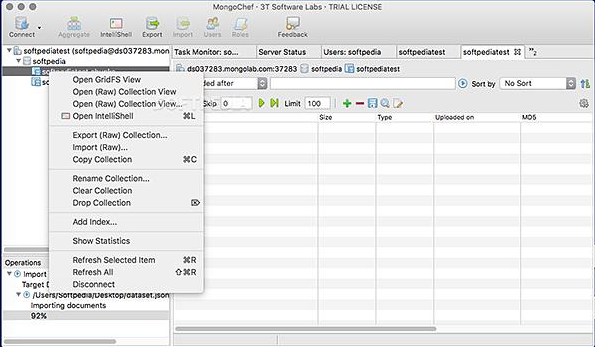
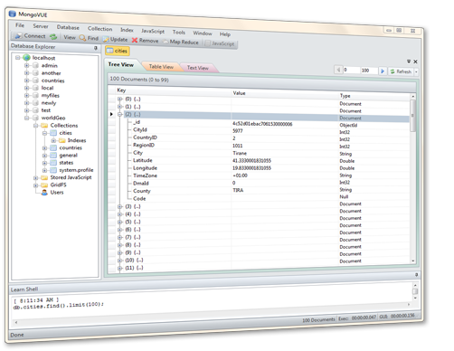
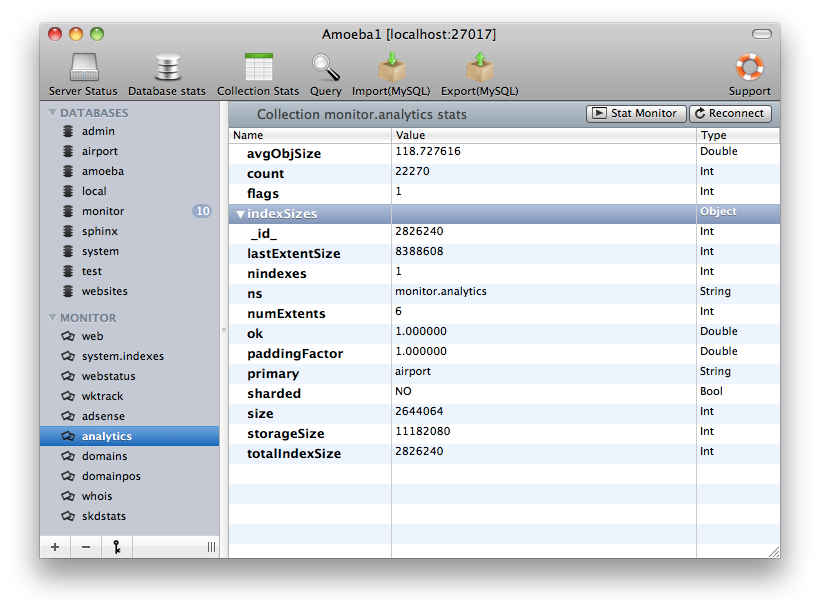
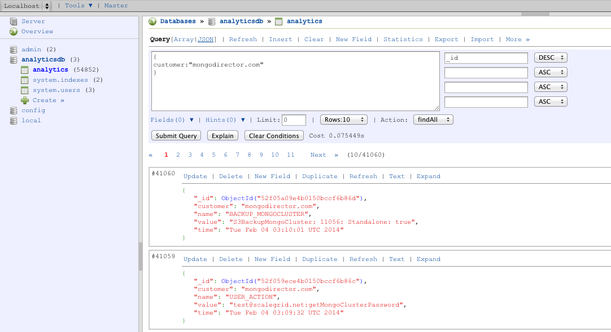
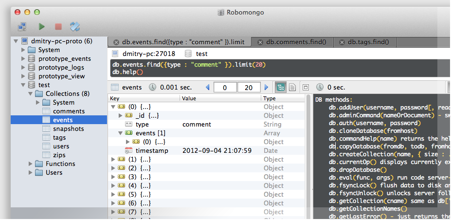

好用的mongodb可视化工具

一个好的开发工具是开发过程中的一个重要组成部分。mongo shell用来管理操作工很方便,但在处理大量数据时,用户界面变得相当重要。在选择MongoDB可视化工具时,有些好,有些不太好。以下是一些MongoDB可视化工具的建议。我们的主要场景是数据可视化、演示和编辑。当然你的选择取决于你的行为偏好。
1)MongoBooster是MongoDB v2.2 shell-centric跨平台的GUI工具- 3.2,提供update-in-place Lodash &时刻。js集成,ES6语法支持和真正的智能代码提示。官方链接链接:http://mongobooster.com。MongoBooster提供真正的智能代码提示。内置语言服务会提示所有可能的方法,属性,变量,关键词,甚至MongoDB集合名称,字段名称和操作符。在你编写代码的时候会自动提示。你也可以用Ctrl-Shift-Space快捷键手动触发它。默认情况下,Ctrl-Space Alt-Space也是快捷键。
2)MongoChef - 使用MongoDB时MongoChef也是一个非常好的的工具，它跨平台。不管你是要处理本地数据库或处理碎片和副本集,用MongoChef来处理MongoDB的工作是一件非常轻松而且惬意的事情。官网地址：https://3t.io/mongochef/

3) MongoVue – MongoVue是windows平台的桌面GUI。它有一个简单干净的用户界面并且基本功能都是免费的。数据可被展示在文本视图,树视图或表视图。您还可以保存您的find查询供以后使用,我们觉得这很方便。更高级的功能要求购买许可证。软件整体表现很稳定而且官方有很好的维护。

4) MongoHub 是一个mac平台的软件。 它提供了一个选项,可以连接到MongoDB服务器通过SSH隧道,从安全的角度来看是相当实用的。不过它的查询接口是有点限制的,它似乎只支持一个树视图。也没有办法为以后保存find查询。

5) RockMongo是一个基于html的MongoDB可视化工具类似于 管理mysql的phpadmin。这个工具是用PHP编写的,是开源的。基于html的方式的缺点是,你需要一个PHP服务器来运行这个GUI。你也可以选择在本地运行PHP服务器。这个工具没有太多的修饰,相当容易使用和支持所有的常见的选项集合,统计数据等。查找接口只以表格/文本模式提供数据,所以当你正在与多级documents打交道时，它可能是一个问题,。它似乎也没有很多检查更新的状态,所以我有点怀疑这个项目是不活跃的。

6) RoboMongo是一个以shell为中心的MongoDB可视化工具，它支持Windows,MacOS和linux平台。它仍然是早期的RoboMongo 0.8.4的最新版本。它也是为数不多的支持SSL连接mongodb服务器的可视化工具。也支持通过SSH隧道连接。在查询界面显示数据可以显示树视图,表格视图和文本视图。你也可以保存你的操作供以后使用。它也支持shell 所以你仍然可以继续舒服地使用shell命令。
